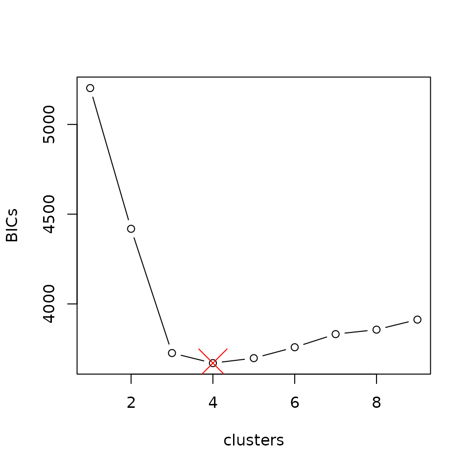
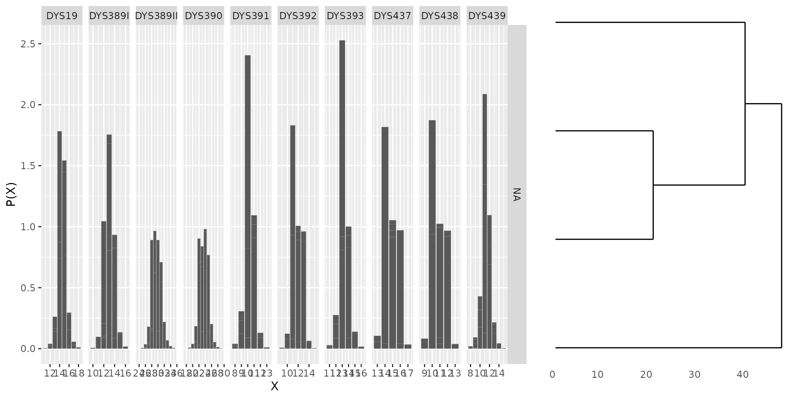
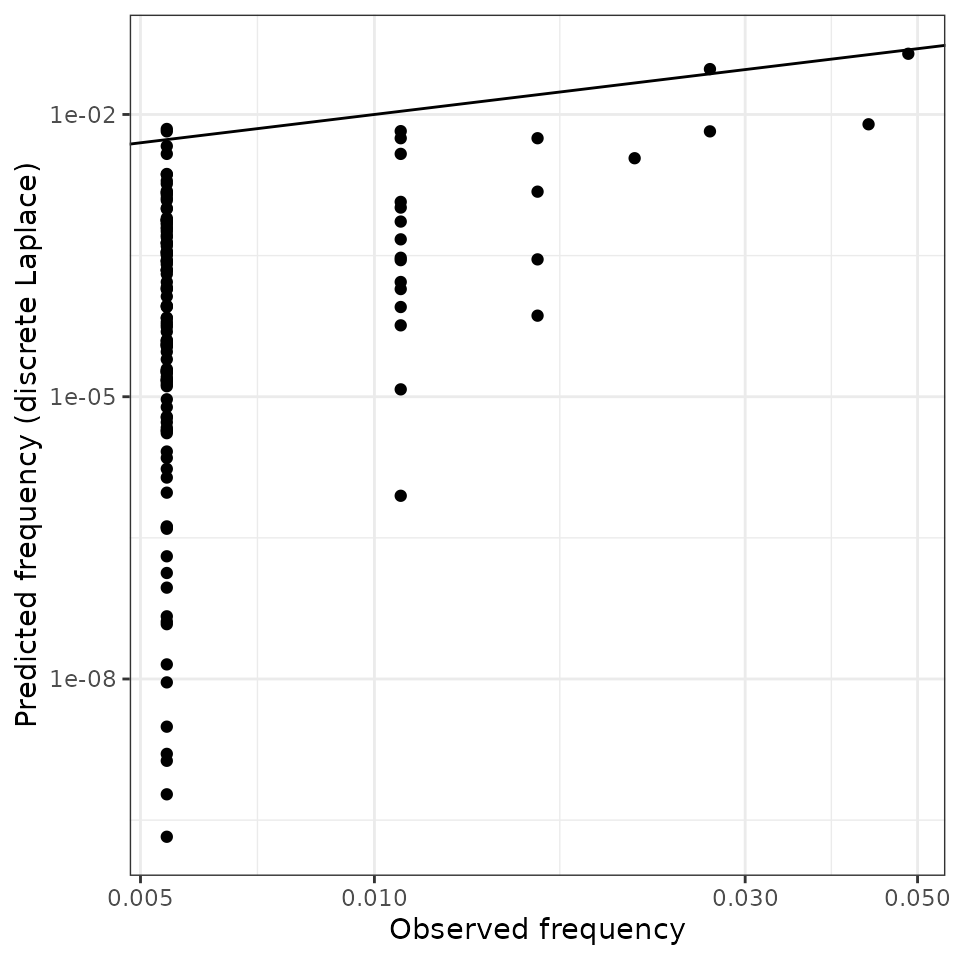

Introduction
Mikkel Meyer Andersen
17 august, 2022
Source:vignettes/introduction.Rmd
introduction.RmdIntroduction
This vignette shows how to use the R package disclapmix
that implements the method described in (Andersen, Eriksen, and Morling 2013b).
The key function is
disclapmix_adaptive().
For a more gentle introduction to the method, refer to (Andersen, Eriksen, and Morling 2013a).
Analysis
A Danish reference database (Hallenberg et al.
2005) with \(n = 185\)
observations (male Y-STR haplotypes) at \(r=10\) loci is available in the
danes dataset. Let us load the package as well as the
data:
library(ggplot2)
library(disclapmix)
data(danes)The database is in compact format, i.e. one unique haplotype per row. To fit the model, we need one observation per row. This is done for example like this:
## int [1:185, 1:10] 13 13 13 13 13 13 14 14 14 14 ...
## - attr(*, "dimnames")=List of 2
## ..$ : chr [1:185] "1" "2" "3" "4" ...
## ..$ : chr [1:10] "DYS19" "DYS389I" "DYS389II" "DYS390" ...Also, note that the database is now an integer matrix.
Short version
We fit models from 1 cluster up to as many necessary (see
?disclapmix_adaptive for how this is determined):
fits <- disclapmix_adaptive(x = db)We can extract how well each model fits the data (judged by the marginal BIC (Schwarz 1978)):
## disclapmixfit from 185 observations on 10 loci with 4 clusters.
##
## EM converged: TRUE
## Number of central haplotype changes: 0
## Total number of EM iterations: 16
## Model observations (n*loci*clusters): 1850
## Model parameters ((clusters*loci)+(loci+clusters-1)+(clusters-1)): 56
## GLM method: internal_coef
## Initial central haplotypes supplied: FALSE
## Method to find initial central haplotypes: pamWe can plot how well each model fits the data:
clusters <- seq_along(fits) # or: sapply(fits, function(x) nrow(x$y))
plot(clusters, BICs, type = "b")
points(nrow(bestfit$y), bestfit$BIC_marginal, pch = 4, cex = 4, col = "red")
And use the model to predict haplotype frequencies:
db_haplotypes <- as.matrix(danes[, seq_len(ncol(db))])
p <- predict(bestfit, db_haplotypes)
plot(log10(danes$n / sum(danes$n)), log10(p),
xlab = "Observed relative frequency",
ylab = "Discrete Laplace estimated probability")
abline(0, 1)
Longer version
To fit a model using 2 clusters, the following command can be used
(note the L postfix to emphasize that the number is an
integer):
fit <- disclapmix(x = db, clusters = 2L)The number of clusters is not known beforehand. Here, the numbers 1 through 5 are tried and the best one according to the BIC (Schwarz 1978) is taken:
clusters <- 1L:5L
fits <- lapply(clusters, function(clusters) {
fit <- disclapmix(x = db, clusters = clusters)
return(fit)
})
marginalBICs <- sapply(fits, function(fit) {
fit$BIC_marginal
})
bestfit <- fits[[which.min(marginalBICs)]]The best fit is now in the bestfit that can be inspected
by print (default method called when the variable is just
written) or summary which (currently) give the same
output:
bestfit## disclapmixfit from 185 observations on 10 loci with 4 clusters.
##
## EM converged: TRUE
## Number of central haplotype changes: 0
## Total number of EM iterations: 16
## Model observations (n*loci*clusters): 1850
## Model parameters ((clusters*loci)+(loci+clusters-1)+(clusters-1)): 56
## GLM method: internal_coef
## Initial central haplotypes supplied: FALSE
## Method to find initial central haplotypes: pam
summary(bestfit)## disclapmixfit from 185 observations on 10 loci with 4 clusters.
##
## EM converged: TRUE
## Number of central haplotype changes: 0
## Total number of EM iterations: 16
## Model observations (n*loci*clusters): 1850
## Model parameters ((clusters*loci)+(loci+clusters-1)+(clusters-1)): 56
## GLM method: internal_coef
## Initial central haplotypes supplied: FALSE
## Method to find initial central haplotypes: pamWe can also plot the fitted model:
plot(bestfit)
There are important information returned by disclapmix,
e.g. the central haplotypes and the dispersion parameters for the
discrete Laplace distributions:
bestfit$y## DYS19 DYS389I DYS389II DYS390 DYS391 DYS392 DYS393 DYS437 DYS438 DYS439
## [1,] 14 13 29 24 11 13 13 15 12 12
## [2,] 15 14 31 23 10 12 14 14 10 11
## [3,] 15 13 30 25 10 11 13 14 11 11
## [4,] 14 12 28 22 10 11 13 16 10 11
bestfit$disclap_parameters## DYS19 DYS389I DYS389II DYS390 DYS391 DYS392
## cluster1 0.1519902 0.10790796 0.2309797 0.2190487 0.11291165 0.06488933
## cluster2 0.2119974 0.15051099 0.3221725 0.3055310 0.15749018 0.09050823
## cluster3 0.1874694 0.13309693 0.2848973 0.2701812 0.13926864 0.08003646
## cluster4 0.1235191 0.08769439 0.1877120 0.1780160 0.09176078 0.05273412
## DYS393 DYS437 DYS438 DYS439
## cluster1 0.10614775 0.04510183 0.04104708 0.1842068
## cluster2 0.14805584 0.06290844 0.05725284 0.2569333
## cluster3 0.13092584 0.05562996 0.05062871 0.2272062
## cluster4 0.08626391 0.03665325 0.03335805 0.1497008The returned object is described in ?disclapmix and
objects can be inspected using e.g. str().
Haplotype frequencies can be obtained using the predict
function. Note, that this is done per haplotype (danes) and
not per observation (db):
These can be compared to the database frequencies:
ggplot() +
geom_abline(intercept = 0, slope = 1) +
geom_point(aes(x = danes$n/sum(danes$n), y = disclap_estimates)) +
labs(x = "Observed frequency",
y = "Predicted frequency (discrete Laplace)") +
theme_bw() +
scale_x_log10() +
scale_y_log10()